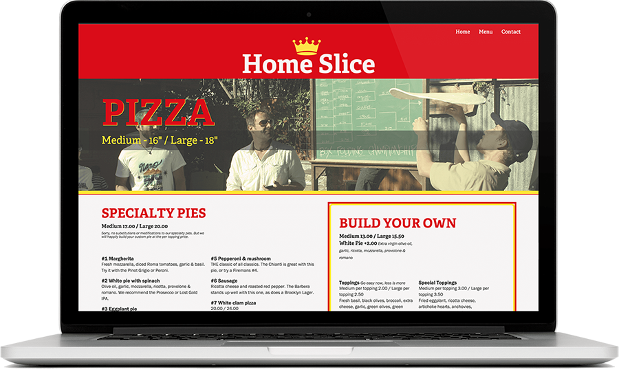

<div class="post-container">
	<div class="project">
		<h2>RESTAURANT MENU REDESIGN</h2>
		<h4>View <a href="http://andreastclair.github.io/tiy_assignments/day_26/home.html">Live</a> or check it out on <a href="https://github.com/andreastclair/tiy_assignments/tree/master/day_26">Github</a></h4>

		

		<div class="horiz-line"></div>

		<div class="list-container">
			<h4>Toolkit:</h4>
			<ul>
				<li>HTML</li>
				<li>CSS</li>
				<li>Typekit</li>
				<li>Sass</li>
			</ul>
			<ul>	
				<li>Photoshop</li>
				<li>Illustrator</li>
				<li>Responsive Web Design</li>
				<li>Market Research</li>
			</ul>
		</div>	

		<div class="clear-fix"></div>

		<div class="horiz-line"></div>

		<h2>ABOUT THIS PROJECT</h2>
		<p>This project is a redesign of a local Austin pizza staple. Homeslice has been a fixture on South Congress Avenue for ten years, but unfortunately, their current site poorly reflects the restaurant's vibrant, warm, and unique vibe. My goal was to update this site so that their online presence more accurately portrays the experience that Austinites know and love. I began this project by researching the restaurant's beginnings, surveying pizza-eaters, and developing color profiles. A few sketches and mockups later, I dove into the code.</p>
		<p>I drew inspiration from classic pizza boxes where the screenprinted design gives room for stylish imperfections within the yellow and red borders.</p>
		

		
		

	</div>	
</div>
	


